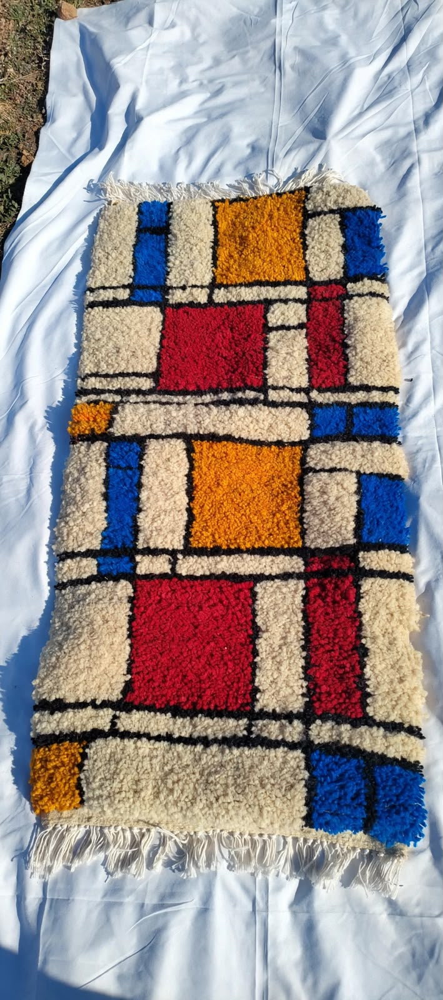
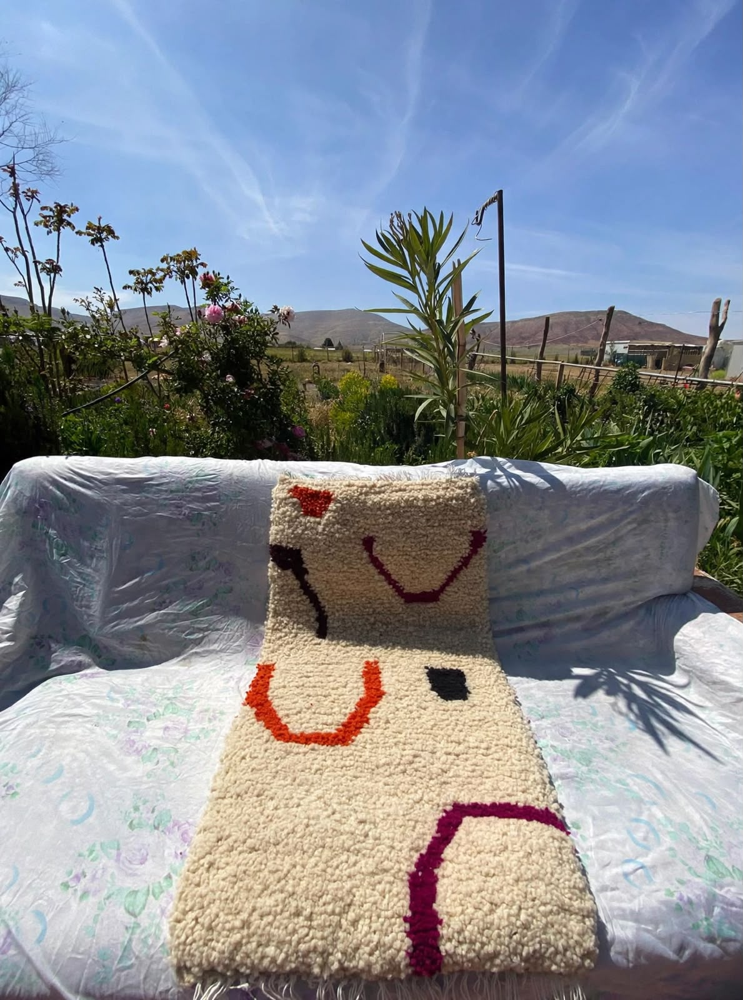
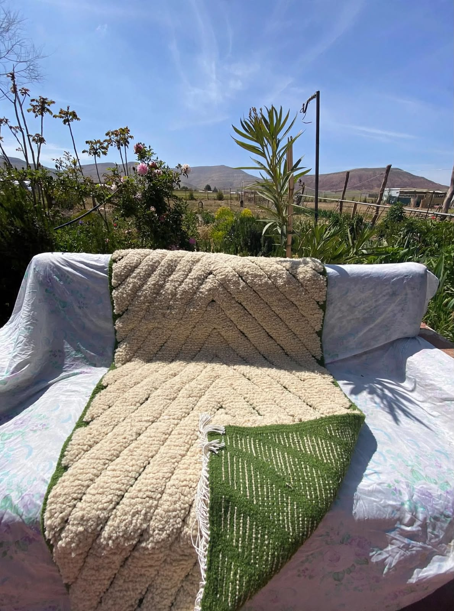
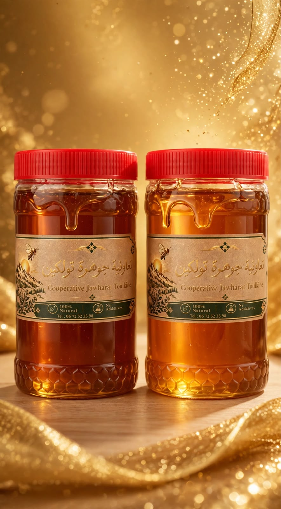
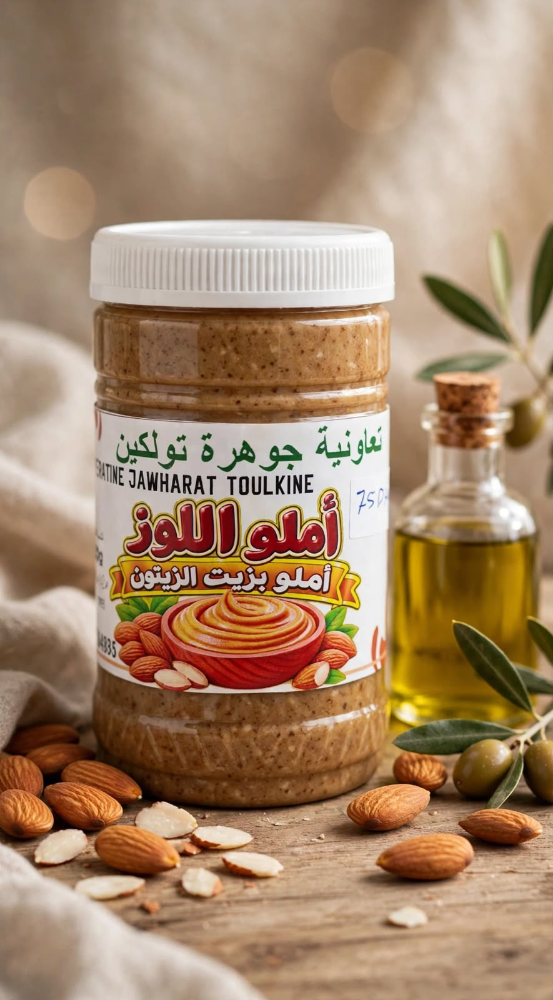
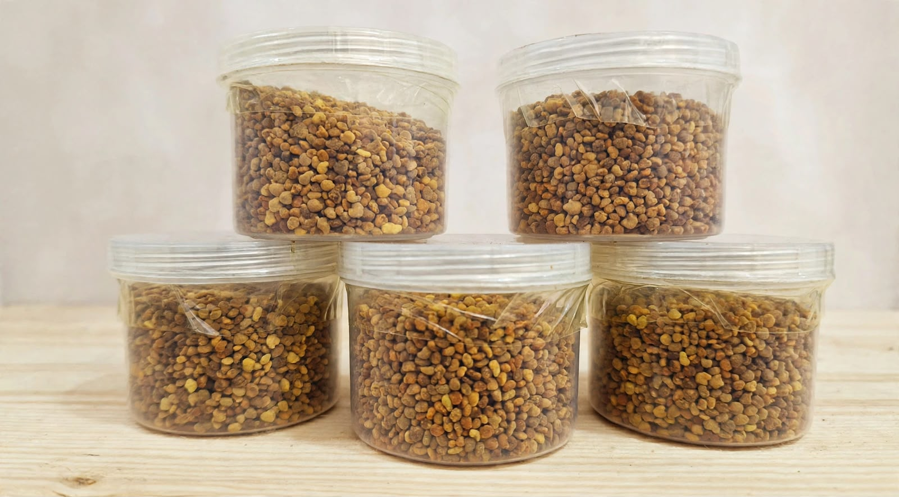
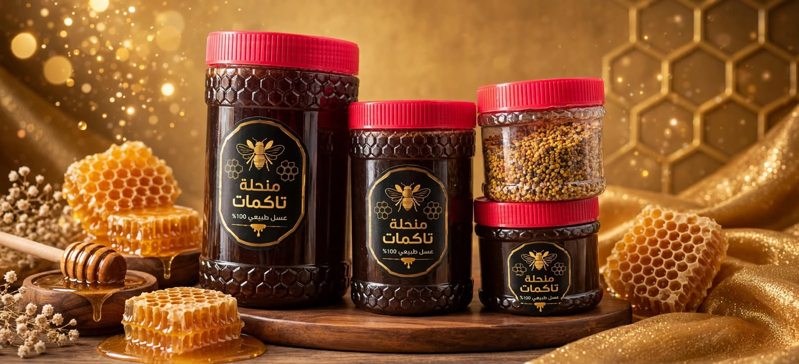
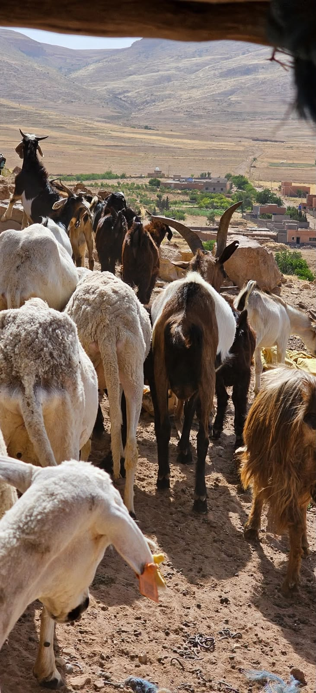

Acteurs Locaux
Les savoir-faire qui font vivre Toulkine
Les savoir-faire qui font vivre Toulkine
Les habitants, les coopératives et les producteurs contribuent à la richesse économique et culturelle du territoire. À travers l'artisanat, l'agriculture, l'élevage et les produits du terroir, ils participent à la préservation des savoir-faire et à la valorisation de l'identité locale.

Idoudan N Ourgh
La coopérative développe des activités artisanales autour de la laine et du travail textile.
- Tapis traditionnels
- Tissage
- Couture de djellabas traditionnelles en laine locale
- Crochet





Jawharat Toulkine
La coopérative est spécialisée dans la valorisation des produits de la ruche.
- Miel naturel
- Pollen
- Propolis






Ouli – Élevage
La coopérative développe des activités liées à l'élevage caprin et à la valorisation de ses produits, notamment le beurre de chèvre.
- Élevage caprin
- Beurre de chèvre
- Produits dérivés




Toulkine – Agriculture et élevage
Cette coopérative intervient dans les domaines de l'agriculture et de l'élevage, avec une activité de valorisation des produits agricoles et des ressources locales.
Les producteurs et productrices du territoire
Au-delà des coopératives, plusieurs habitants valorisent individuellement les ressources et les produits locaux.
Productions des femmes
- Herbes aromatiques et médicinales
- Œufs fermiers
- Beurre de vache
- Produits céréaliers
Productions des hommes
- Noix
- Amandes
- Pommes
- Autres produits saisonniers
Soutenir l'économie locale
Découvrir Toulkine, c'est aussi découvrir celles et ceux qui font vivre le territoire. La rencontre avec les coopératives et les producteurs constitue une occasion de mieux connaître les savoir-faire locaux et de contribuer à leur valorisation.
Nous contacter